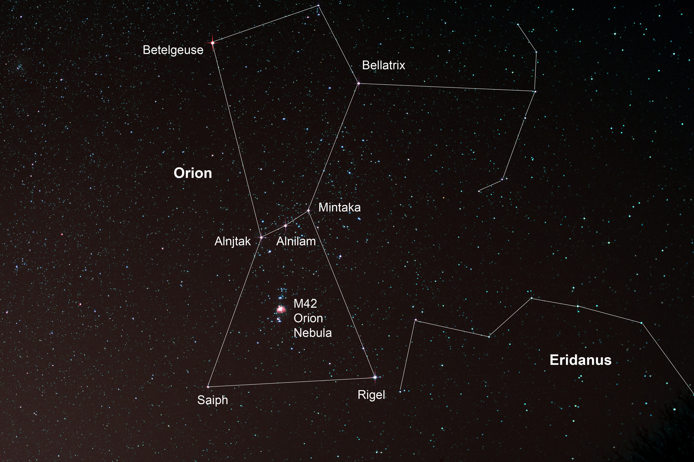

Orion Constellation'
Orion constellation is one of the brightest and best known constellations in the night sky. It lies on the celestial equator. Orion has been known since ancient times. The constellation is also known as the Hunter, as it is associated with one in Greek mythology. It represents the mythical hunter Orion, who is often depicted in star maps as either facing the charge of Taurus, the bull, pursuing the Pleiades sisters, represented by the famous open cluster, or chasing after the hare (constellation Lepus) with his two hunting dogs, represented by the nearby constellations Canis Major and Canis Minor. The constellation Orion contains two of the ten brightest stars in the sky – Rigel (Beta Orionis) and Betelgeuse (Alpha Orionis) – a number of famous nebulae – the Orion Nebula (Messier 42), De Mairan’s Nebula (Messier 43) and the Horsehead Nebula, among others – the well-known Trapezium Cluster, and one of the most prominent asterisms in the night sky – Orion’s Belt.

MYTHOLOGY
In Greek mythology, the hunter Orion was the most handsome of men. He was the son of the sea god Poseidon and Euryale, the daughter of King Minos of Crete. In Homer’s Odyssey, Orion is described as exceptionally tall and armed with an unbreakable bronze club. In one myth, Orion fell in love with the Pleiades, the seven sisters, daughters of Atlas and Pleione. He started pursuing them and Zeus scooped them up and placed them in the sky. The Pleiades are represented by the famous star cluster of the same name, located in the constellation Taurus. Orion can still be seen chasing the sisters across the sky at night. In another story, Orion fell in love with Merope, the beautiful daughter of King Oenopion, who didn’t return his affections. One night, he had too much to drink and tried to force himself on her. The king, enraged, put out Orion’s eyes and banished him from his land, the island of Chios. Hephaestus felt sorry for the blind, wandering Orion and offered one of his assistants to guide the hunter and act as his eyes. Orion eventually encountered an oracle that told him if he went east toward the sunrise, his sight would be restored. Orion did so and his eyes were miraculously healed. The constellation Orion has its origins in Sumerian mythology, specifically in the myth of Gilgamesh. Sumerians associated it with the story of their hero fighting the bull of heaven, represented by Taurus. They called Orion URU AN-NA, which means “the light of heaven.” Their name for the constellation Taurus was GUD AN-NA, or “the bull of heaven.” Orion is often shown as facing the attack of a bull, yet there are no myths in Greek mythology telling any such tale. When describing the constellation, the Greek astronomer Ptolemy describes the hero with a club and lion’s pelt, both of which are usually associated with Heracles, but there is no evidence in mythology books of a direct relation between the constellation and Heracles. However, since Heracles, the most famous of Greek heroes, is represented by the much less conspicuous constellation Hercules, and since one of his tasks was to catch the Cretan bull, there are at least hints of a possible connection between the two. Most myths about Orion’s death involve a scorpion, but the stories differ from one mythographer to another. In one tale, Orion boasted to the goddess Artemis and her mother Leto that he could kill any beast on earth. The Earth Goddess heard him and sent a scorpion, which stung the giant to death. In another story, he tried to force himself on Artemis and she was the one who sent the scorpion. In yet another account of his death, Orion was stung while trying to save Leto from the scorpion. All myths of Orion’s death share the same outcome: Orion and the scorpion were placed on opposite sides of the sky, so that when the constellation Scorpius rises in the sky, Orion sets below the horizon in the west, fleeing from the scorpion. However, there is also a myth that does not involve a scorpion: Artemis, the goddess of hunting, fell in love with the hunter and, to stop her from giving up her vows of chastity, her brother Apollo dared her to hit a small target in the distance with her bow and arrow. Not knowing that the target was Orion, who was enjoying a swim, she hit it in a single shot, killing her would-be lover. Devastated by his death, she placed Orion among the stars. Orion is a well-known constellation in many cultures. In Australia, the stars forming Orion’s Belt and sword are sometimes called the Pot or the Saucepan. In South Africa, the three stars of Orion’s Belt are known as Drie Konings (the three kings) or Drie Susters (the three sisters). In Spain and Latin America, the stars are called Las Tres Marías, or The Three Marys. Babylonians knew Orion as MUL.SIPA.ZI.AN.NA or The Heavenly Shepherd (The True Shepherd of Anu) in the Late Bronze Age and associated the constellation with Anu, the god of the heavenly realms. Egyptians associated it with Osiris, the god of death, afterlife and rebirth. Orion was also identified with Unas, the last Pharaoh of the Fifth Dynasty, who was said to have eaten the flesh of his enemies and devoured the gods themselves to become great and bring inheritance of his power. According to myth, Unas travels through the sky to become the star Sabu, or Orion. Because pharaohs were believed to be transformed into Osiris after death, some of the greatest pyramids – the ones at Giza – were built to mirror the pattern of the stars in the constellation. To make the transformation easier, the air shaft in the King’s Chamber in the Great Pyramid was aligned with the star Alnitak, Zeta Orionis, the easternmost star in Orion’s Belt. The Aztecs called the stars of Orion’s Belt and sword the Fire Drill; their rising in the sky signalled the beginning of the New Fire ceremony, a ritual Aztecs performed to postpone the end of the world. In Hungarian mythology, Orion is identified with Nimrod, a famous hunter and father of Hunor and Magor, the two twins also known as Hun ad Hungarian. In Scandinavian tradition, the constellation is associated with the goddess Freya and called Frigg’s Distaff (Friggerock), after the tool she used for spinning. The Chinese knew the constellation as Shen, a great hunter or warrior. Another ancient legend dates back to the second millennium BC. The Hittites (a Bronze Age people of Anatolia, the region comprising most of present-day Turkey) associated the constellation with Aqhat, a famous mythical hunter. The war goddess Anat fell in love with him, but after he refused to lend her his bow, she tried to steal it. However, the man she sent to get the bow messed up the assignment pretty badly, killing Aqhat and dropping the bow into the sea. This is why, according to the myth, the constellation drops below the horizon for two months in the spring.
FACTS
Ursa Major is the third largest constellation in the sky, occupying an area of 1280 square degrees. It is located in the second quadrant of the northern hemisphere (NQ2) and can be seen at latitudes between +90° and -30°. The neighboring constellations are Boötes, Camelopardalis, Canes Venatici, Coma Berenices, Draco, Leo, Leo Minor and Lynx. Ursa Major contains seven Messier objects: Messier 40 (M40, Winnecke 4), Messier 81 (M81, NGC 3031, Bode’s Galaxy), Messier 82 (M82, NGC 3034, Cigar Galaxy), Messier 97 (M97, NGC 3587, Owl Nebula), Messier 101 (M101, NGC 5457, Pinwheel Galaxy), Messier 108 (M108, NGC 3556), and Messier 109 (M109, NGC 3992). It also contains 13 stars with confirmed planets. The brightest star in the constellation is Alioth, Epsilon Ursae Majoris, with an apparent magnitude of 1.76. There are two meteor showers associated with the constellation; the Alpha Ursa Majorids and the Leonids-Ursids. Ursa Major belongs to the Ursa Major family of constellations, along with Boötes, Camelopardalis, Canes Venatici, Coma Berenices, Corona Borealis, Draco, Leo Minor, Lynx, and Ursa Minor.